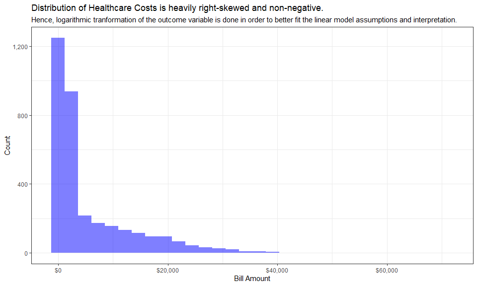
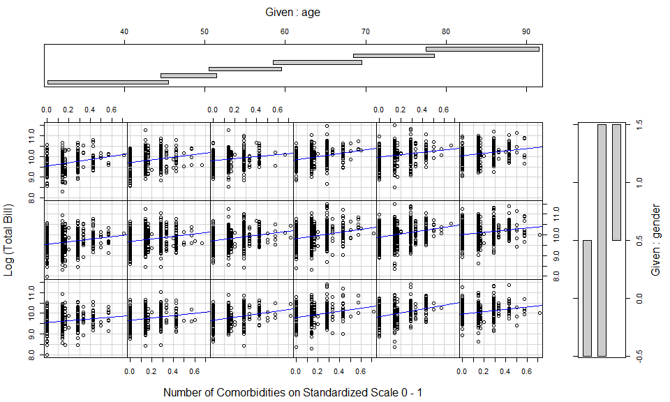
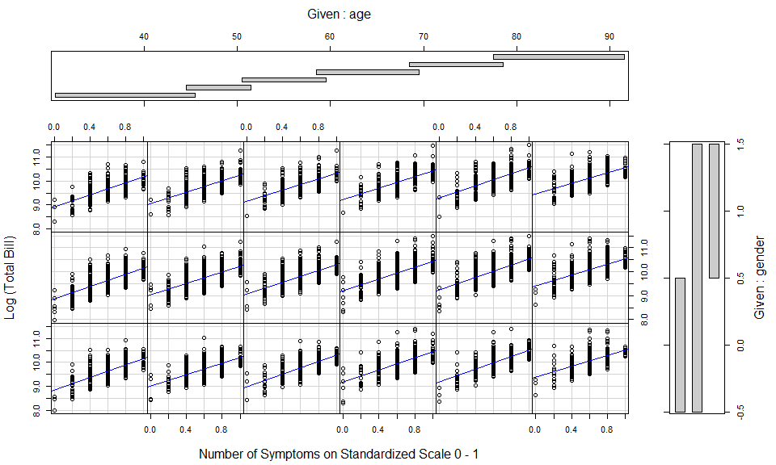
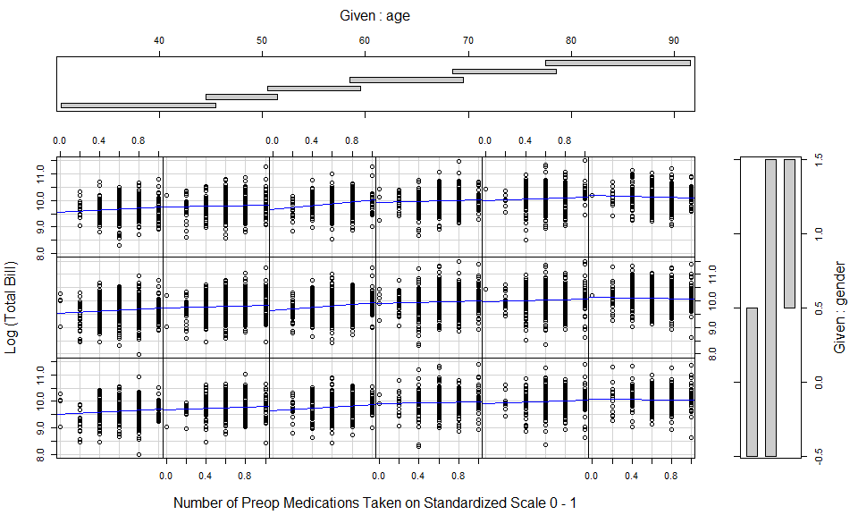
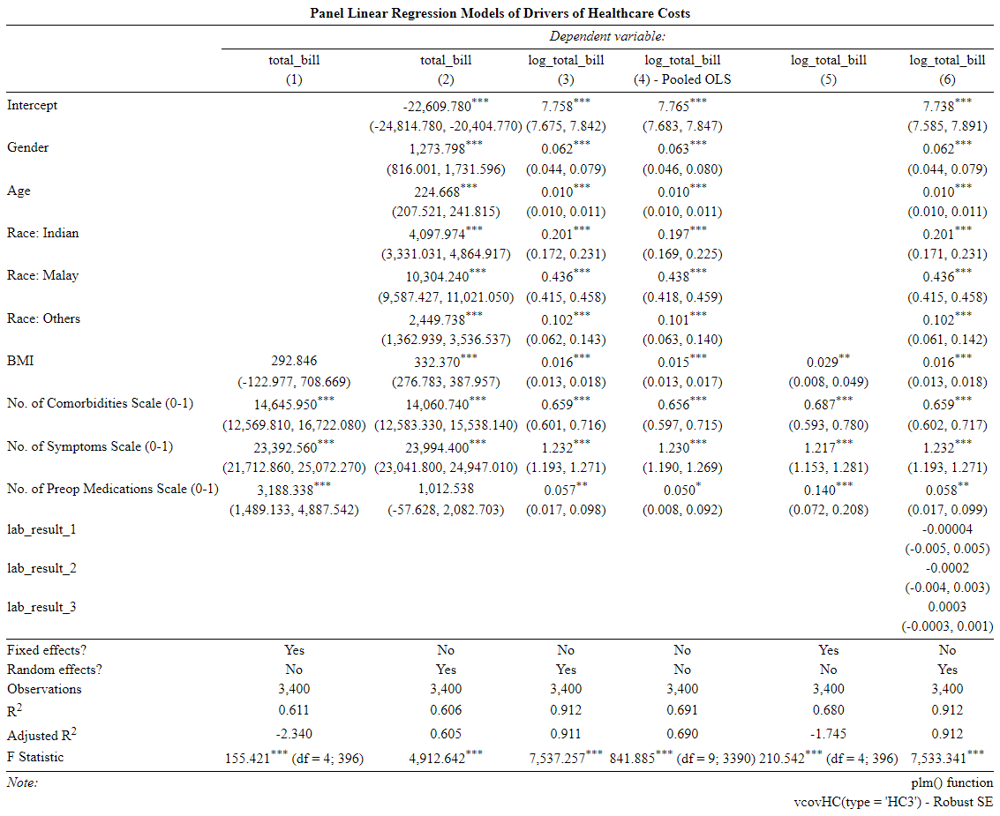
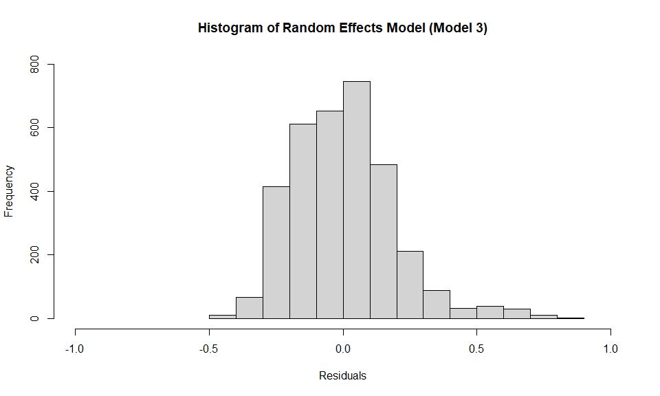
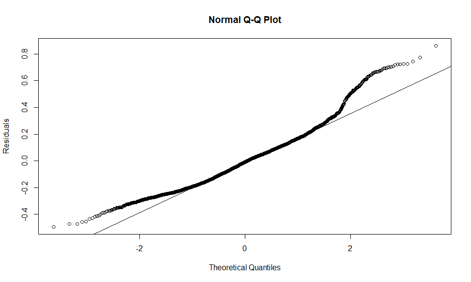
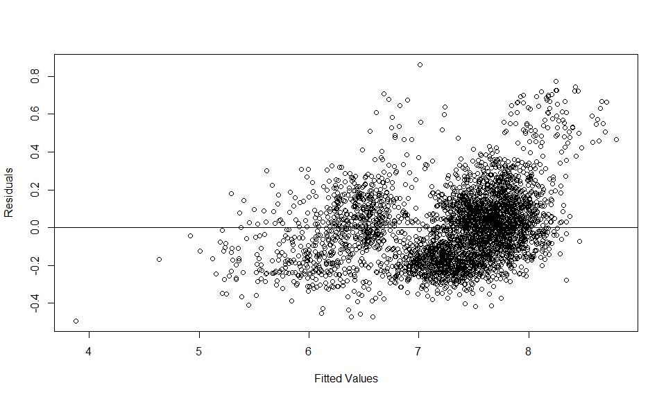

Drivers of Health Care Costs
An Exploratory Data Analysis using the Healthcare Challenge Data Set
Xue Li
December 28, 2021
Using the unbalanced panel dataset, the multiple linear regression with random effects model is used to determine the major contributing factors of the healthcare costs for patients hospitalized for a certain condition.
Research Methodology
- Importing and Merging Data Sets
- Data Cleaning
- Regression Model
- Residual Diagnostics
- Regression Diagnostics
Importing & Merging Datasets
The 4 data sets are merged initially by matching
patient_idandbill_id.In the merged data set, each unique
patient_idmay matched to severalbill_idswith the same admission date, the observations are collapsed further to consolidate the total bill incurred for each hospitalization event, with 3,000 unique patient ids and 3,400 unique id-time observations.
Data Cleaning
Inconsistency in data input of variables such as
gender,resident_statusandmedical_history_3are cleaned.Additional continuous variables are created for regression model:
bmi- standardized scale for comparison which takes into account both height and weightmedication- standardized scale (0 - 1) on number of preop_medications takensym_count- standardized scale (0 - 1) on number of symptoms experiencedcomorbid- standardized scale (0 - 1) on number of medical histories applicable

Correlation Table between Variables
Regression Model
The
plmpackage is used to run multiple linear regression model on panel data with individual fixed effects and random effects.Hausman Test is subsequently used to decide between fixed or random effects, where null hypothesis suggest that the preferred model is random effects.
Individual Fixed Effects Model - Total Bill as Outcome Variable
| Raw Estimate | Robust S.E. | T Value | P Value | Raw Estimate - 2.5% | Raw Estimate - 97.5% | |
|---|---|---|---|---|---|---|
| bmi | 292.846 | 212.158 | 1.380 | 0.168 | -352.421 | 938.114 |
| comorbid | 14645.946 | 1059.273 | 13.826 | 0.000 | 11832.715 | 17459.176 |
| sym_count | 23392.564 | 857.009 | 27.296 | 0.000 | 21352.864 | 25432.265 |
| medication | 3188.338 | 866.957 | 3.678 | 0.000 | 1121.654 | 5255.021 |
Random Effects Model - Total Bill as Outcome Variable
| Raw Estimate | Robust S.E. | T Value | P Value | Raw Estimate - 2.5% | Raw Estimate - 97.5% | |
|---|---|---|---|---|---|---|
| (Intercept) | -22609.775 | 1125.024 | -20.097 | 0.000 | -24730.253 | -20489.297 |
| gender | 1273.798 | 233.574 | 5.454 | 0.000 | 814.137 | 1733.460 |
| age | 224.668 | 8.748 | 25.681 | 0.000 | 208.965 | 240.371 |
| as.factor(race)Indian | 4097.974 | 391.305 | 10.473 | 0.000 | 3315.259 | 4880.689 |
| as.factor(race)Malay | 10304.238 | 365.727 | 28.175 | 0.000 | 9726.741 | 10881.734 |
| as.factor(race)Others | 2449.738 | 554.500 | 4.418 | 0.000 | 1419.387 | 3480.090 |
| bmi | 332.370 | 28.361 | 11.719 | 0.000 | 277.102 | 387.637 |
| comorbid | 14060.735 | 753.794 | 18.653 | 0.000 | 12603.719 | 15517.751 |
| sym_count | 23994.405 | 486.033 | 49.368 | 0.000 | 23014.970 | 24973.840 |
| medication | 1012.538 | 546.013 | 1.854 | 0.064 | -1.322 | 2026.397 |
Random Effects Model - Log(Total Bill) as Outcome Variable
| Raw Estimate | Robust S.E. | T Value | P Value | Exp(Estimate) - 2.5% | Exp(Estimate) - 97.5% | |
|---|---|---|---|---|---|---|
| (Intercept) | 7.758 | 0.043 | 181.335 | 0.000 | 2158.972 | 2538.562 |
| gender | 0.062 | 0.009 | 6.953 | 0.000 | 1.045 | 1.083 |
| age | 0.010 | 0.000 | 32.491 | 0.000 | 1.010 | 1.011 |
| as.factor(race)Indian | 0.201 | 0.015 | 13.326 | 0.000 | 1.187 | 1.260 |
| as.factor(race)Malay | 0.436 | 0.011 | 40.540 | 0.000 | 1.514 | 1.582 |
| as.factor(race)Others | 0.102 | 0.021 | 4.941 | 0.000 | 1.065 | 1.152 |
| bmi | 0.016 | 0.001 | 14.483 | 0.000 | 1.014 | 1.018 |
| comorbid | 0.659 | 0.029 | 22.488 | 0.000 | 1.824 | 2.047 |
| sym_count | 1.232 | 0.020 | 62.135 | 0.000 | 3.298 | 3.562 |
| medication | 0.057 | 0.021 | 2.760 | 0.006 | 1.018 | 1.102 |
Pooled OLS Model for Comparison - Log(Total Bill) as Outcome Variable
| Raw Estimate | Robust S.E. | T Value | P Value | Exp(Estimate) - 2.5% | Exp(Estimate) - 97.5% | |
|---|---|---|---|---|---|---|
| (Intercept) | 7.765 | 0.042 | 186.455 | 0.000 | 2177.662 | 2550.141 |
| gender | 0.063 | 0.009 | 7.373 | 0.000 | 1.047 | 1.083 |
| age | 0.010 | 0.000 | 34.201 | 0.000 | 1.010 | 1.011 |
| as.factor(race)Indian | 0.197 | 0.014 | 13.852 | 0.000 | 1.184 | 1.253 |
| as.factor(race)Malay | 0.438 | 0.010 | 41.823 | 0.000 | 1.517 | 1.583 |
| as.factor(race)Others | 0.101 | 0.020 | 5.148 | 0.000 | 1.066 | 1.149 |
| bmi | 0.015 | 0.001 | 14.964 | 0.000 | 1.014 | 1.018 |
| comorbid | 0.656 | 0.030 | 21.721 | 0.000 | 1.817 | 2.045 |
| sym_count | 1.230 | 0.020 | 60.814 | 0.000 | 3.288 | 3.556 |
| medication | 0.050 | 0.021 | 2.351 | 0.019 | 1.009 | 1.095 |
Individual Fixed Effects Model for Comparison - Log(Total Bill) as Outcome Variable
| Raw Estimate | Robust S.E. | T Value | P Value | Exp(Estimate) - 2.5% | Exp(Estimate) - 97.5% | |
|---|---|---|---|---|---|---|
| bmi | 0.029 | 0.011 | 2.705 | 0.007 | 1.000 | 1.059 |
| comorbid | 0.687 | 0.048 | 14.375 | 0.000 | 1.756 | 2.249 |
| sym_count | 1.217 | 0.033 | 37.121 | 0.000 | 3.087 | 3.693 |
| medication | 0.140 | 0.035 | 4.054 | 0.000 | 1.051 | 1.260 |
Random Effects Model with Lab Result Variables - Log(Total Bill) as Outcome Variable
| Raw Estimate | Robust S.E. | T Value | P Value | Exp(Estimate) - 2.5% | Exp(Estimate) - 97.5% | |
|---|---|---|---|---|---|---|
| (Intercept) | 7.738 | 0.078 | 99.136 | 0.000 | 1972.949 | 2664.881 |
| gender | 0.062 | 0.009 | 6.936 | 0.000 | 1.045 | 1.083 |
| age | 0.010 | 0.000 | 32.480 | 0.000 | 1.010 | 1.011 |
| as.factor(race)Indian | 0.201 | 0.015 | 13.281 | 0.000 | 1.187 | 1.260 |
| as.factor(race)Malay | 0.436 | 0.011 | 40.508 | 0.000 | 1.514 | 1.582 |
| as.factor(race)Others | 0.102 | 0.021 | 4.900 | 0.000 | 1.064 | 1.151 |
| bmi | 0.016 | 0.001 | 14.475 | 0.000 | 1.014 | 1.018 |
| comorbid | 0.659 | 0.029 | 22.481 | 0.000 | 1.825 | 2.048 |
| sym_count | 1.232 | 0.020 | 62.073 | 0.000 | 3.299 | 3.562 |
| medication | 0.058 | 0.021 | 2.794 | 0.005 | 1.019 | 1.103 |
| lab_result_1 | 0.000 | 0.002 | -0.017 | 0.986 | 0.995 | 1.005 |
| lab_result_2 | 0.000 | 0.002 | -0.127 | 0.899 | 0.996 | 1.003 |
| lab_result_3 | 0.000 | 0.000 | 0.967 | 0.333 | 1.000 | 1.001 |
Correlation between No. of Comorbidities and Log(Total Bill)

Correlation between No. of Symptoms and Log(Total Bill)

Correlation between No. of Medications taken and Log(Total Bill)

Comparison of Regression Models

Residual Diagnostics
Distribution of Residuals
The residuals are approximately normally distributed which means the multiple linear regression model could be reasonably used to draw accurate inferences of the model estimates. 
Q-Q Plot of Residuals
Visual display of residuals is reasonably close to the straight line, except for the extreme values at the lower and upper tails where residuals are larger than expected. 
Residual Plot of PLM Regression with R.E.
The unstructured cloud of points centered at zero which suggested independence between residuals and fitted values, which satisfies homoskedasticity assumption of linear regression. 
Regression Diagnostics
Fixed or Random Effects: Hausman Test
Since the null hypothesis cannot be rejected, the random effects model is preferred.
##
## Hausman Test
##
## data: log_total_bill ~ gender + age + as.factor(race) + bmi + comorbid + ...
## chisq = 5.3069, df = 4, p-value = 0.2572
## alternative hypothesis: one model is inconsistentLagrange Multiplier Test for Random Effects
The null hypothesis in the LM test is that variances across individuals is zero.
Since the null hypothesis can be rejected in favor of the alternative, this means that there is significant difference across units (i.e. panel effect exists).
##
## Lagrange Multiplier Test - (Breusch-Pagan) for unbalanced panels
##
## data: log_total_bill ~ gender + age + as.factor(race) + bmi + comorbid + ...
## chisq = 50.108, df = 1, p-value = 1.455e-12
## alternative hypothesis: significant effectsDiscussion Points
- Need for specific domain knowledge to assess of there could be other confounders to deduce if causal inference coud be made
- Alternative model? PGLM with Gamma distribution with log link, that performs satisfactorily with distributions with long right tails